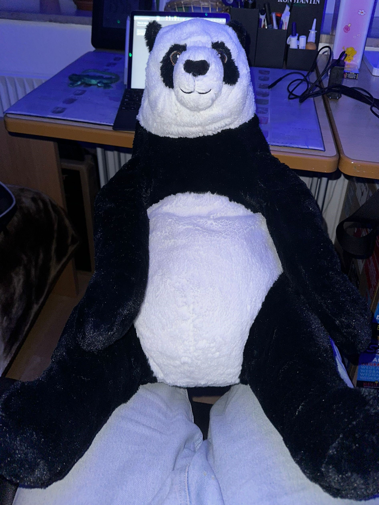

Die Flagge
Die offizielle Flagge der hakamischen Sprache ist Oben zu sehen. Der Adler symbolisiert die BRD, Das Orange ist die offizielle Farbe, das Blau symbolisiert die Tränen die Fließen, wenn Herr Müller wieder scheiße macht, das Hohenwehrda-Grün symbolisiert die Nähe zum Lietz Internat Hohenwehrda, einer wahren Folterkammer, wenn man so will, aber aus diesem kleinen Kaff kommt die großartige hakamische Sprache. Der Kampf gegen Herr Müller geht weiter, und die hakamische Nation und Kultur wird sich früher oder später durchsetzen
Was ist Hakam
Hakam ist ein Dialekt, der seinen Ursprung im Klassenraum der 9RG auf dem Schloss Hohenwehrda, sowie im Nebenhaus hat. Es ist mehr als nur ein Slang. Manche Wörter sind auch nur ein Shitpost, und die meisten sind sogar alltagsgeläufig. Die eigene Sprache ist nur Schritt 1. Aus Hakam wird ein kulturell vielfältiges Projekt, das sich früher oder Später als Nation oder Sekte etablieren wird. Das offizielle Maskottchen, ist der Djungelskog: Hier ein Bild:
